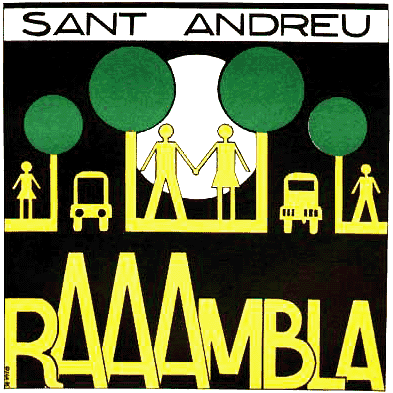

|  |
La reivindicació
de La Rambla:
Com va anar tot plegat |
 |
|
Després d'uns
anys que uns funcionaris d' "aquella època", anomenats
Porcioles i Sauqué, haguessin destrossat La
Rambla de Sant Andreu, Un dia, mal dia,
dels anys seixanta, quan el centralisme el dominaven els feixistes,
l'Ajuntament de Barcelona va considerar que la Rambla de l'antic municipi
de Sant Andreu de Palomar feia nosa. I va ser eliminada. Era una zona de
passeig, de trobada; de botigues i de bars amb terrassa; de cinemes
i d'arbres enormes. I, prescindint del consentiment dels andreuencs,
li van aplicar un "plan de desarrollo" i va esdevenir una
ineficaç "via ràpida". Ho van fer-ho barroerament,
tot requisant càmeres i pel·lícules i fent visitar
la comissaria, detinguts, a uns quants veïns indignats. Una dècada
i mitja més tard, en Joan Cusidó va aconseguir
introduir, dins un paquet de reivindicacions dels veïns del barri
d'Estadella, la de recuperar La Rambla. Això
va provocar la convocatòria d'una assemblea al Centre Cívic
sota el lema "Recuperem la Rambla". Hi van assistir
entre quatre-centes i cinc-centes persones, van debatre, van opinar
i van ser convocats a l'Associació de Veïns de Sant Andreu
tots aquells que hi volguessin col·laborar. La Comissió
va quedar configurada en el seu nucli bàsic per Joan Cusidó,
Pere Seda, Xavier Gómez i Jaume Domènech. No va ser fàcil. Hi va haver tensions entre una Junta encalladota, influïda per una formació política, i la independència i el ritme d'actuació de la Comissió. Va ser el contrast entre bona gent molt suau, barrejada amb d'altra amb interessos corporatius i personals, vers altres més enèrgics i idealistes. |
La qüestió és que, afortunadament, malgrat ètiques poc justificables, infundis, una escisió i travetes variades, la Comissió, recolzada en molta gent encantadora, sincera i generosa, amb certes discrepàncies i debats interns que al capdevall manifestaven el seu equilibri, va imposar el seu ritme i la Campanya per la recuperació de La Rambla va tirar endavant. Cartells, articles
al Sant Andreu de Cap a Peus i una edició especial,
un manifest,
un còmic,
actes, aparicions a la televisió i la ràdio, una exposició,
una maqueta, festes, una sola manifestació gens aspra, reunions,
pancartes, enfrontaments amb persones i personatges del que es va qualificar
de "virreinat" (el 'Districte': el centralisme era ara democràtic),
assemblees, cartes i dossiers, nervis, diàleg... Així va anar, si fa no fa. Jo hi era.
|
| del
llibre 'Sant Andreu de Palomar,
més que un poble' (pàgina
209) editat el 20 d'abril de 1998 - 101 anys després de l'annexió de Sant Andreu de Palomar a la ciutat de Barcelona per.. vers.art :: Grup Vers.alles |
 |
webstap@sant-andreu.com
| |
|
|
|
|
|